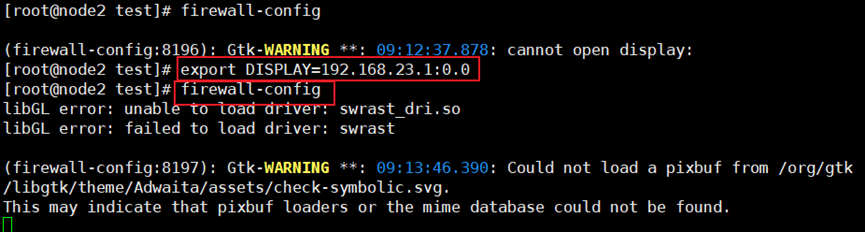
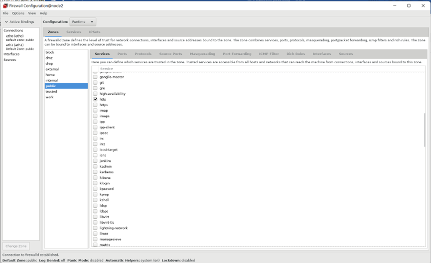
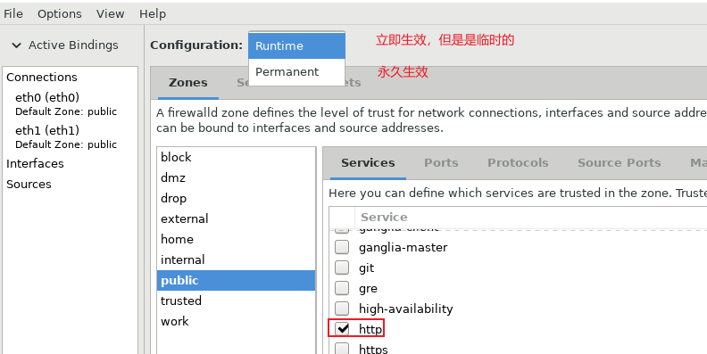
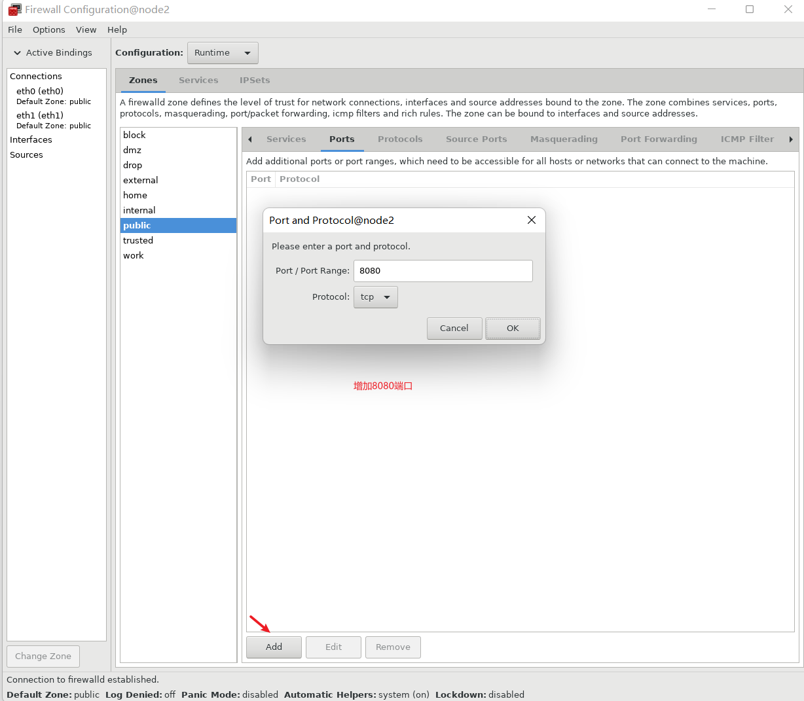

20.4firewalld服务
firewalld 就是iptables的二次封装，操作起来简单了很多。
firewalld 三种配置方法：
| 1、firewall-config 图形工具: 需安装 firewall-config包
2、firewall-cmd 命令行工具: firewalld包,默认安装
3、/etc/firewalld/ 配置文件，一般不建议,如:/etc/firewalld/zones/public.xml
|
启动firewall-config的图形工具：


默认http是没有划勾的，刚刚安装httpd服务后，在其它机器是不能访问的。
1
2
3
4
5
6
7
8
9
10
11
12
13
14
15
16
17
18
19
20
21
22
23
24
25
26
27
28
29
30
| [root@node2 test]
● firewalld.service - firewalld - dynamic firewall daemon
Loaded: loaded (/usr/lib/systemd/system/firewalld.service; enabled; vendor preset: enabled)
Active: active (running) since Thu 2022-07-28 09:11:35 EDT; 9min ago
Docs: man:firewalld(1)
Main PID: 7983 (firewalld)
CGroup: /system.slice/firewalld.service
└─7983 /usr/bin/python2 -Es /usr/sbin/firewalld --nofork --nopid
Jul 28 09:11:34 node2 systemd[1]: Stopped firewalld - dynamic firewall daemon.
Jul 28 09:11:34 node2 systemd[1]: Starting firewalld - dynamic firewall daemon...
Jul 28 09:11:35 node2 systemd[1]: Started firewalld - dynamic firewall daemon.
Jul 28 09:11:35 node2 firewalld[7983]: WARNING: AllowZoneDrifting is enabled. This is...ow.
Hint: Some lines were ellipsized, use -l to show in full.
[root@node2 test]
website
[root@node2 test]
State Recv-Q Send-Q Local Address:Port Peer Address:Port
LISTEN 0 128 *:22 *:*
LISTEN 0 100 127.0.0.1:25 *:*
LISTEN 0 128 127.0.0.1:6010 *:*
LISTEN 0 128 :::80 :::*
LISTEN 0 128 :::22 :::*
LISTEN 0 100 ::1:25 :::*
LISTEN 0 128 ::1:6010
[root@node1 yum.repos.d]
curl: (7) Failed connect to 192.168.23.102:80; No route to host
|

在下拉选项中选择Runtime，则立即生效
1
2
| [root@node1 yum.repos.d]# curl 192.168.23.102
website
|
1
2
3
4
5
6
7
8
9
10
11
12
13
14
15
16
17
| [root@node2 test]
Listen 80
Listen 8080
[root@node2 test]
[root@node2 test]
State Recv-Q Send-Q Local Address:Port Peer Address:Port
LISTEN 0 128 *:22 *:*
LISTEN 0 100 127.0.0.1:25 *:*
LISTEN 0 128 127.0.0.1:6010 *:*
LISTEN 0 128 :::8080 :::* // 启用了8080端口
LISTEN 0 128 :::80 :::*
LISTEN 0 128 :::22 :::*
LISTEN 0 100 ::1:25 :::*
LISTEN 0 128 ::1:6010 :::*
|

在firewall-config的图形工具中，增加8080端口前后的测试结果：
1
2
3
4
5
6
7
8
| [root@node1 yum.repos.d]
curl: (7) Failed connect to 192.168.23.102:8080; No route to host
[root@node1 yum.repos.d]
website
[root@node1 yum.repos.d]
curl: (7) Failed connect to 192.168.23.102:8080; No route to host
|